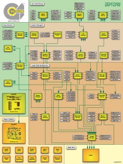
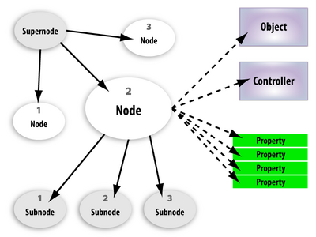

Programming Introduction to the C4 Engine
From C4 Engine Wiki
This page provides an introduction to the programming interface and general design philosophies of the C4 Engine. An understanding of each of the topics described below is essential to programming applications for the C4 Engine effectively. Specific information about the application programming interface (API) is not covered here, but instead can be found in the API Documentation.
Contents |
Engine Architecture

Specific applications and tools are built as dynamic-link libraries (DLLs) that are separate from the C4 Engine and loaded as plugins. This separation between the main engine module and other modules cleanly isolates the application-independent code in the engine. It also allows an application or tool to be rebuilt without having to recompile the engine. When the C4 Engine is run, it loads at most one application module and any number of tool modules.
Nodes
A single scene that can be rendered in the C4 Engine is called a world and is represented by the World class. All of the items in a world are organized into a scene graph having a tree structure, and each node of this tree represents a single item. C4 defines a class called Node that serves as the base class for a large hierarchy of different classes used to represent a variety of different types of objects in the scene graph. Some examples of various node types and their associated classes are listed below.
- Lights There are several distinct light types supported by the C4 Engine, and they are represented by the
Lightclass. - Cameras Although only one type of camera is ordinarily used, C4 supports a few different types of cameras. They are represented by the
Cameraclass. - Geometries Most polygonal geometry is encapsulated in the scene graph by the
Geometryclass. - Sources Sound sources can be placed in the scene graph, and they are represented by the
Sourceclass. - Zones Every world is divided into one or more zones, which can be arranged hierarchically. Zones are represented by the
Zoneclass. - Portals Zones are connected by portals, represented by the
Portalclass.
A node can have any number of subnodes, and all nodes except the root node have exactly one supernode. Each node contains a transformation matrix that describes how coordinates are transformed from its local coordinate space to the coordinate space of its supernode. Each node also contains the transformation from its local space all the way to world space.
Objects, Controllers, and Properties

For most types of nodes, there are corresponding types of objects. A node can reference only one object corresponding to its primary type (some types of nodes also reference additional special objects), but an object can be referenced by an unlimited number of nodes. This is how instancing works in C4. All instance-specific information (such as a transform) is stored in a Node subclass, and all information that is shared among all instances is stored in an Object subclass.
Each node in a scene graph may have a controller attached to it. A controller is represented by the Controller class and is used to manage anything about its target node that changes over time. For example, a controller could be used to move a geometry node in some way, or it could be used to modify the brightness of a light source. Several types of controllers are built into the core engine, and an application can define its own types of controllers by subclassing from the Controller class (see Defining a Custom Controller).
A node may have any number of properties attached to it that define any special characteristics that the node possesses. There are a few property classes built into the core engine, but most properties are defined by an application (see Defining a Custom Property). A single subclass of the Property class can hold any amount of information, and an application can define a user interface for adjusting this information in the World Editor.
Zones and Portals
The primary means through which the C4 Engine performs large-scale visibility determination is an advanced portal system. A world is arranged as a hierarchy of zones, and these zones are connected by portals. From a particular camera position, only parts of the world that are visible through a sequence of portals are considered for rendering. Portals are also used to determine what light sources need to be considered for a given camera view and what sound sources can be heard from the listener's location.
The root node of every world is an infinite zone. As its name suggests, this zone extends to infinity in every direction. Other nodes can be placed directly in the infinite zone, but it is often the case that smaller subzones are created to hold the geometric layout of a world.
See the Portal Tutorial for more information about zones and portals.
SimpleBall and SimpleChar Projects
The C4 Engine ships with two projects called SimpleBall and SimpleChar. (Click on either link to see the complete source code.) These projects contain very small game modules that serve as simple examples of how to use various fundamental concepts in the engine.
The two files composing the SimpleBall project are heavily commented and represent nearly the minimum amount of code that needs to be written to have a working game module. You can tell the engine to load this game module by editing the file Data/Game/game.cfg and changing the value of the variable $gameModuleName to "SimpleBall". To get the primary game module back, change $gameModuleName to "Game" again.
When the SimpleBall module is running, the world called “SimpleBall” can be loaded to show a demonstration of the collision detection system. (To load the world, type load world/SimpleBall in the Command Console.) The “SimpleBall” world contains dozens of green bouncing balls in a small room, and every ball can collide with the environment or any other ball.
The SimpleChar module is another heavily commented project that demonstrates the simplest usage of the CharacterController class. It can be run by changing the $gameModuleName variable to "SimpleChar" in the Data/Game/game.cfg file and then running C4.exe. You can load any world using the load command in the console, and then you'll be able to run the soldier model around the world using the WSAD keys and the mouse.
Coding Conventions
The C4 Engine is written entirely in C++, and everything declared in the source code belongs to the C4 namespace. See Coding Conventions for a list of rules that are used in the engine code.